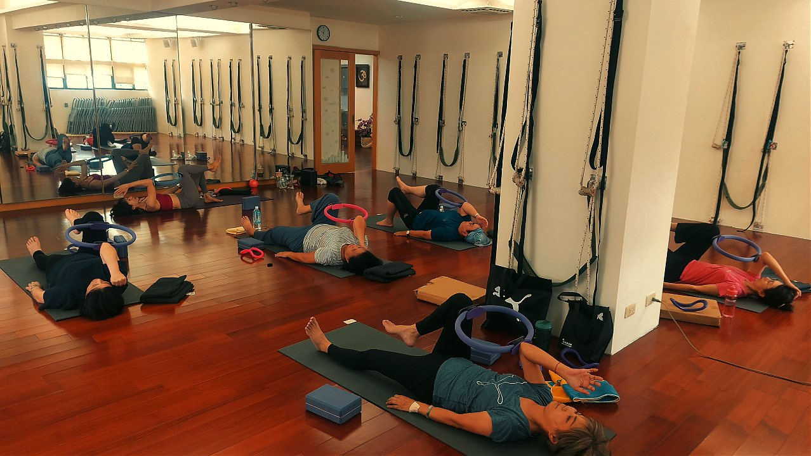
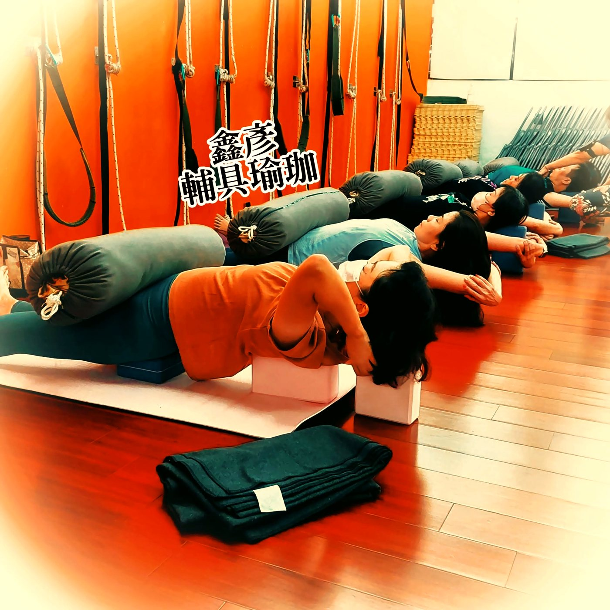

駝背會讓你變矮嗎？把脊椎「拉回來」的真相

量身高的時候被說「好像比以前矮了一點」，你心裡是不是咯噔一下？別急著擔心。很多時候，那不是你真的縮水，而是駝背把脊椎的曲線「壓」塌了，讓你站起來時比實際能有的高度短了一截。這篇就老實跟你說：這一截，到底找不找得回來。
駝背怎麼把你「壓」矮的？
健康的脊椎從側面看是柔和的 S 形，一節一節之間有正常的弧度，這些弧度會替你「撐」出高度。長期低頭、久坐、盯螢幕，會讓胸椎（也就是上背這一段）過度前彎、往前拱起來，肩膀跟著往前掉、頭往前伸。脊椎原本該有的曲線一塌陷，整個人就像被輕輕往下壓，視覺上駝、量出來也真的少了那麼零點幾到一公分。
更麻煩的是，這是一組會互相拉扯的失衡：
- 前側被縮短：胸口的胸大肌、胸小肌長期緊縮，像兩條收太緊的橡皮筋，把肩膀往前、往內拉。
- 後側被拉鬆變弱：中下背的菱形肌、下斜方肌被拉長又少用，變得叫不太動，撐不起上背。
- 胸椎卡住：這一段脊椎的活動度變差，該挺的地方挺不起來，弧度就一直塌著。
駝背讓你「顯矮、量起來也矮」的，是被壓塌的脊椎排列，不是骨頭本身縮短。把排列調回中立，就有機會把這被壓掉的高度找回一些。
那把脊椎「拉回來」，就能長高嗎？
能找回一些，但要誠實。改善的方向是三件事一起做：把過緊的胸口鬆開、把胸椎的活動度練回來、再喚醒無力的上背，讓塌下去的曲線重新被撐起來。當排列回到比較中立的位置，你站直時本來就該有的高度會顯現出來——這也是為什麼很多人調整一段時間後，會覺得自己「好像高了、也挺拔了」。
但這不是拉一次筋就長高，更不會改變骨頭的長度。它比較像是把一直被你「駝掉、壓短」的高度，慢慢還給你，而且需要規律地練才留得住。想更完整地了解這組失衡是怎麼回事，可以搭配這篇一起看：坐一整天肩膀就往前掉？認識「上交叉症候群」。
壁繩瑜伽，怎麼幫上這一段？
把塌掉的胸椎撐回來，最難的往往是「自己一個人做，找不到那個發力的位置」。壁繩的好處就在這裡：牆上的繩帶給你穩定的支撐，讓你可以在有依靠、不硬撐的狀態下，一邊把緊縮的胸口打開，一邊借力把胸椎慢慢帶出弧度、順勢喚醒平常叫不動的上背。你不需要很好的柔軟度或肌力，繩子會替你分擔重量、帶你找到對的方向——對越坐越駝的人特別友善。如果你還沒接觸過，先看看壁繩到底是什麼、第一次上課會做什麼會更安心。

今天就能做的一個小練習
找一面牆，背對牆站好，讓後腦勺、上背、屁股盡量都輕貼牆面（很多人一貼才發現後腦勺離牆好遠，那就是頭前傾的訊號）。接著吸氣時把胸口輕輕往上、往前打開，肩胛骨往後、往下收，感覺上背貼著牆一點一點靠近，維持 5 個深呼吸，做 3～5 回。它沒辦法一次就把曲線拉回來，但每天做，是在提醒身體「往回站」，是個溫和又實用的起點；要真正把高度穩住，還是得靠規律練習。
本文為體態與姿勢的一般衛教與練習分享，非醫療診斷或治療。若有疼痛、舊傷或特殊病史，請先諮詢合格醫療專業人員。